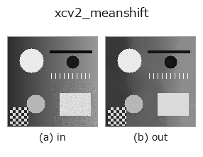

segmentation op• Data kinds: image → image
• Call: fullseye.apply(img, "xcv2_meanshift", a=0.5, b=0.5) (the 2-D model is one image plus two scalar knobs a,b∈[0,1])

*The figure is the actual output on a synthetic 128×128 input. Left: input, right: output. Point clouds are drawn as a top-down scatter (brightness = z), 1-D series as a line plot, volumes as the maximum-intensity projection along z, videos as the middle frame, complex images as magnitude; return values that are not pictures are shown as the values themselves.*
Sweeping knob a (0.1 / 0.5 / 0.9, the other knob at its default):
▸ xcv2_meanshift: knob a sweep (docs site)
Sweeping knob b (0.1 / 0.5 / 0.9, the other knob at its default):
▸ xcv2_meanshift: knob b sweep (docs site)
On other images (synthetic scene / photo / coins. Top row: inputs, bottom row: their outputs. Knobs at default):
▸ xcv2_meanshift: other inputs (docs site)
*The 4th column is a colour (H,W,3) input. This op handles colour without crossing channels (it does not convolve the colour channel as a third spatial axis).*
Smooths color/brightness region by region using mean-shift filtering (`cv2.pyrMeanShiftFiltering`).
> The detailed description below is the original text — the summary and the headings are translated.
`a は空間窓半径 sp を 5〜30 に振り（sp = 5 + 25*a）、b` は
輝度（色）レンジ `sr を 10〜50 に振る（sr = 10 + 40*b`）。グレースケール
画像を内部で 3ch BGR に複製してから処理し、結果を再びグレースケールへ
戻す。エッジを保ったまま平坦な領域を単色化する前処理（減色・セグメンテー
ション前処理）に向く。
• gallery2d_segmentation family guide
• Sample-data catalog (download URLs / licences) — 2-D uses skimage.data (BSD/public domain) plus synthetic images; 3-D lists download URLs for real data sources (Stanford, PDS, …).
• Operator provenance and references — the sources of the research/methods this op family came from.
• The canonical algorithm (author, year) and its uses are named in the family usage guide above.
The program below has been verified to run (same input as the figure). In Studio's help this block becomes buttons that load and run it on the spot.
xcv2_meanshift 0.50 0.50
▸ Load this pipeline · Load & run
• gallery2d_segmentation — py -3.11 examples/gallery2d_segmentation.py
image as input)identity · gaussian · mean_box · bilateral · unsharp · median · min_filter · max_filter
segmentation)threshold · otsu · canny · adaptive_gauss_thresh · sk_otsu · sk_li · sk_yen · sk_sauvola
*Provenance: ops.py — 2D operator registry. This per-op note is generated by tools/opdocs.py md (do not hand-edit).*
© 2026 Kazufumi Furuse — Fullseye operator documentation. Licensed under Apache-2.0.
{kind=link}
{kind=link}
{kind=link}